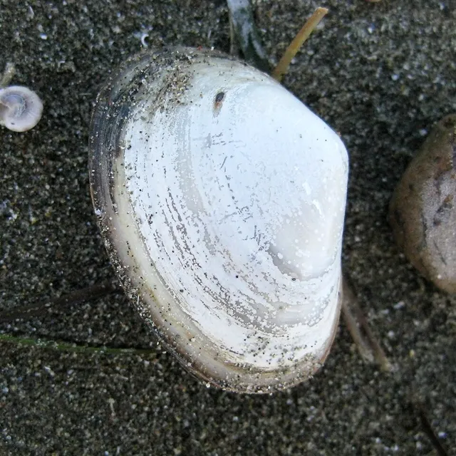

Starters & snacks · Popular in Northland and Auckland and Central North Island
Pipi fritters
Pipi fritters is made with wild pipi and tuatua, a favourite in Northland and Auckland and Central North Island.

How do you make pipi fritters?
Minced pipi in an egg and flour batter, fried golden.
Wild ingredients
- Pipi and tuatua (Paphies australis): in season all year round
Watch the recipe

Video: DIGITAL FISH - Content that catches on YouTube